Identity
Face, blue-black hair, white high-collar shirt, purple rope belt, navy trousers, forearm guards, sandals and sheathed sword follow the approved Sasuke references.
fTilt v04Candidate awaiting user image approval. v03 remains the approved version. v04 redraws the seven-frame step-in straight punch at packScale: 1; fTilt's phase timing stays unchanged. The final Astra anatomy/scale audit runs after the user's decision. Claude retains runtime contact/hurtbox and integration checks.
Face, blue-black hair, white high-collar shirt, purple rope belt, navy trousers, forearm guards, sandals and sheathed sword follow the approved Sasuke references.
The frame sequence remains guard → step → punch preparation → two active punches → recovery → guard. Head H is 0.977–1.003 (median 0.999). Body proxy B is 0.897–0.955 (median 0.917); it is advisory, so compare the body sheet and every frame directly.
48-color quantized pack passes with no fTilt scale-gate failure. Only atlas cells 183–189 changed. Active frames are still f3/f4; their hit boxes and hand points were remeasured at _scale: 1.
Each tile is one 256×256 cell from a quantized atlas. The old strip was packed at 0.92; v04 is packed at 1.00. The same idle f0, approved neutral and approved combat cells below provide body-scale context.
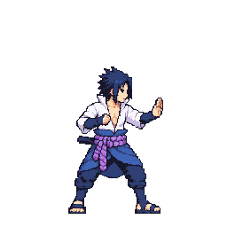
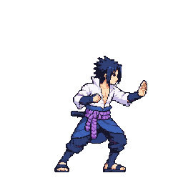
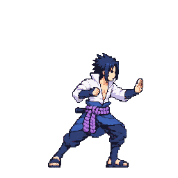
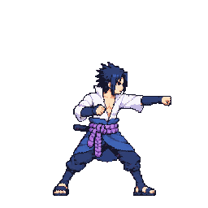
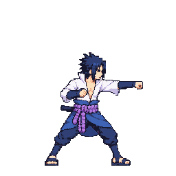
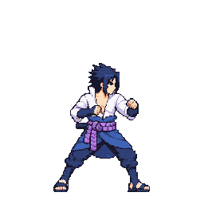
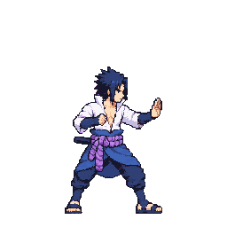
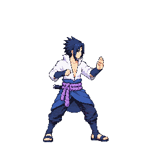
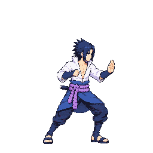
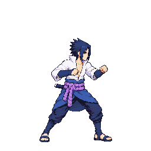
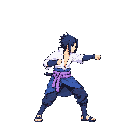
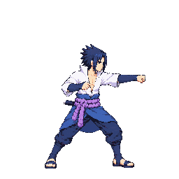
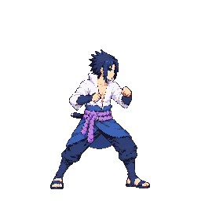
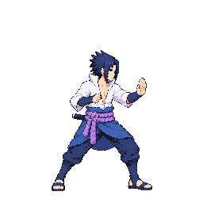
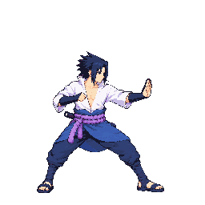
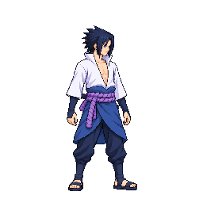

The body-area proxy is close to its advisory boundary: f2 reads 0.897, while the seven-frame median is 0.917. Check visible torso, shoulder, limb, clothing and sandal volume in the side-by-side sheet. The foot report is a shoe-area proxy, not a pure length measure; it ranges 1.055–1.302 (median 1.161) across the changing stance and sandal angles, so it is not treated as a numerical foot-size pass.
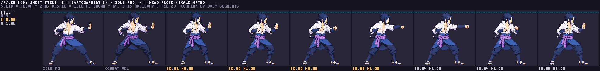
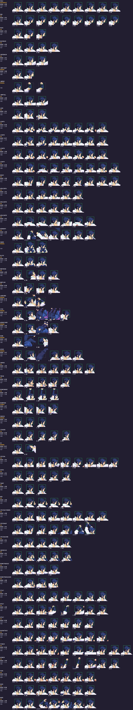
| Frame | Atlas cell | Hit box [x,y,w,h] | Hand point [x,y] |
|---|---|---|---|
| f3 | 186 | [184,106,17,16] | [197,111] |
| f4 | 187 | [193,105,18,16] | [207,111] |
The boxes pad the visible lead-fist bounds by about 3 px. The hand anchors sit on the forward knuckles. Runtime contact remains unvalidated.
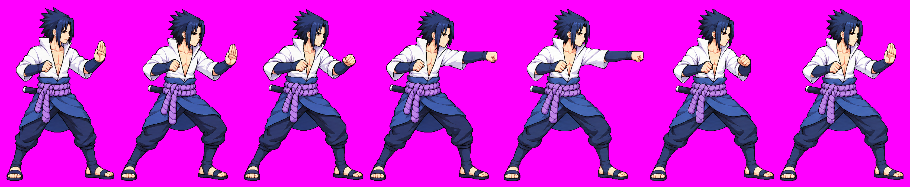
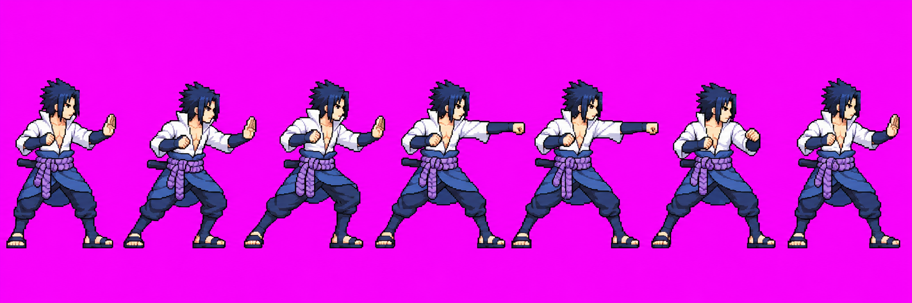
Review choices: approve fTilt v04, or request specific frame corrections; v03 remains approved until the user decides. See the generation-call inventory, packed scale record and atlas hashes and changed cells.